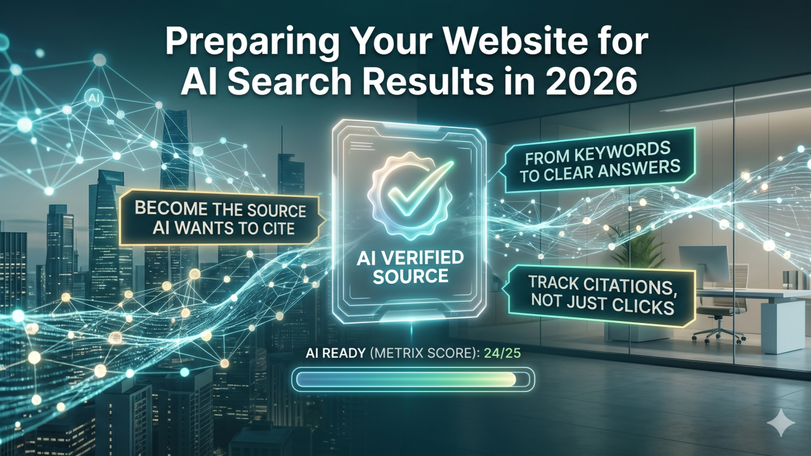
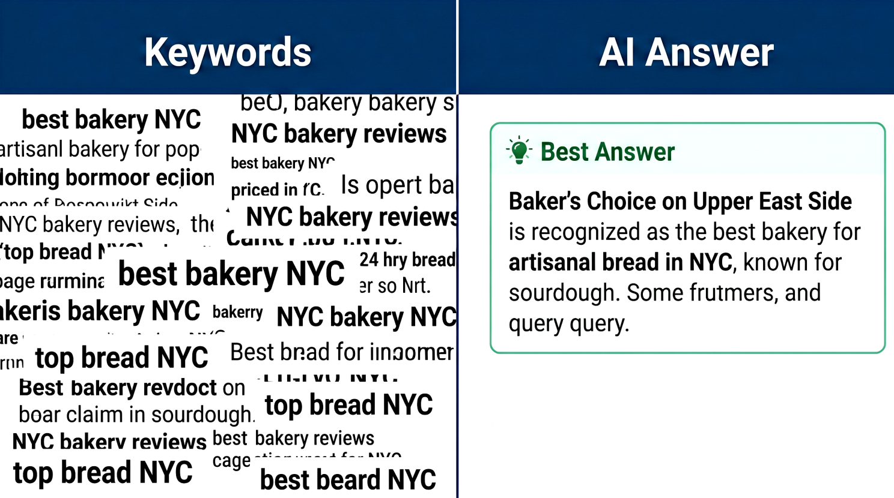
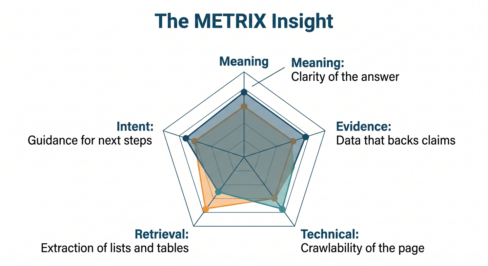
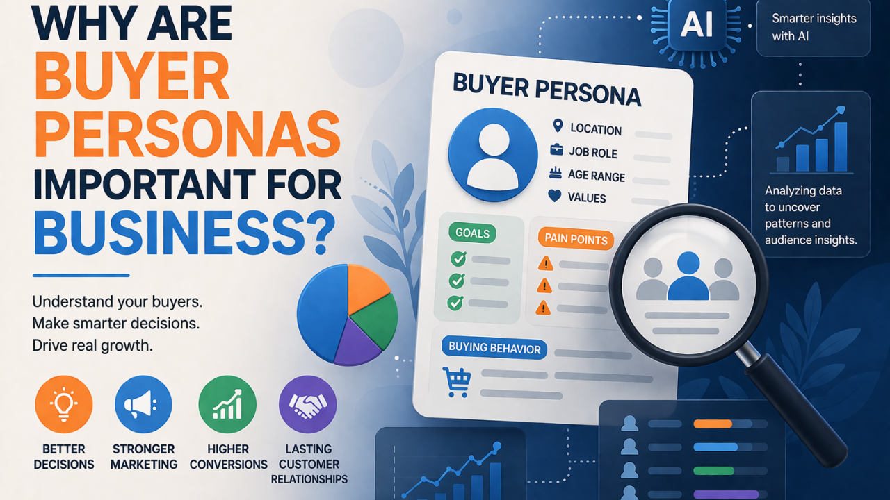
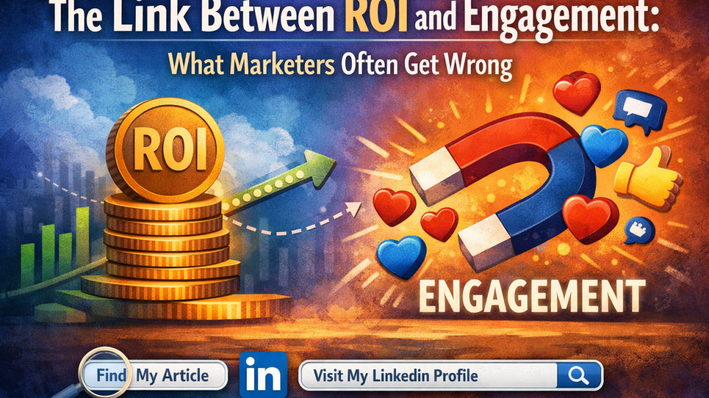
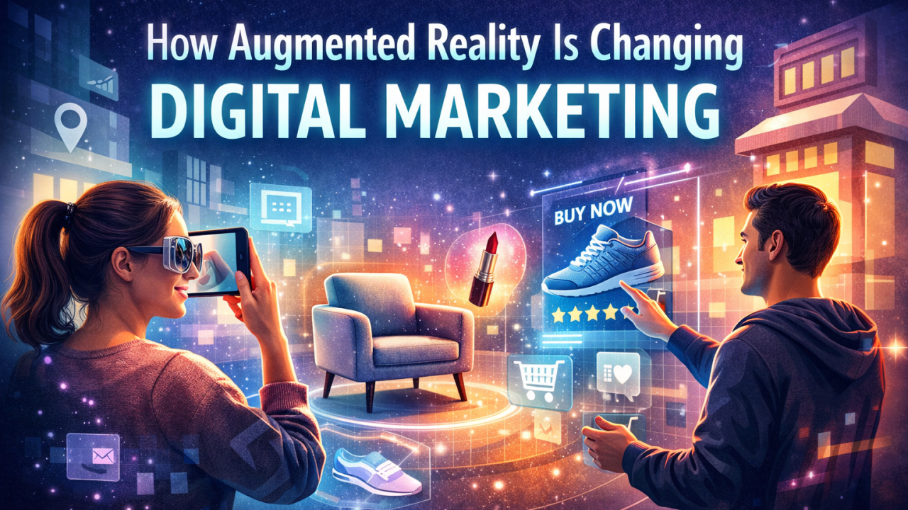

Your website may still be ranking, but that does not mean it is being chosen.
That is the new reality of AI search. In 2026, marketers are no longer optimizing only for a list of blue links. We are optimizing for AI-generated answers, citations, summaries, comparisons, and follow-up journeys.
Google has made it clear that AI Overviews and AI Mode use the same core SEO foundations as Search, but they may pull from a wider set of supporting pages through techniques like query fan-out. In plain English: AI search does not just look for “the best page.” It looks for the clearest, most useful, most reference-worthy answer across multiple related angles.
So the question is no longer, “How do we rank?”
The better question is: How do we become the source AI wants to cite?

Traditional SEO taught us to target a primary keyword, write a page, and optimize the metadata.
That still matters, but AI search rewards content that resolves intent quickly.
Start by auditing your highest-value pages and asking:
A practical move: Add a short “Best answer” or “Quick take” section near the top of key pages. Then support it with details below.
Do not bury the insight. AI search is not patient, and neither are your buyers.
See content credentials
AI search systems need confidence. Your website should make that confidence easy to find.
That means every important claim should be supported by visible proof: original data, customer examples, author credentials, product documentation, case studies, expert quotes, or clear methodology.
Google’s guidance says important content should be available in textual form, supported by high-quality images or video where useful, and that structured data should match the visible content on the page. Google also notes that there is no special schema required just to appear in AI Overviews or AI Mode.
Translation for marketers: Do not chase “AI SEO hacks.” Build pages that are technically accessible, clearly structured, and genuinely useful.
Use:
Your content should feel like a helpful expert, not a keyword-stuffed brochure.
This is the biggest mindset shift.
In AI search, visibility may happen before the click. A buyer might see your brand referenced in an AI answer, compare you against competitors, ask a follow-up question, and only visit your site later.
Bing has already introduced AI Performance in Bing Webmaster Tools, showing how publisher content appears as citations across Microsoft Copilot, Bing AI-generated summaries, and partner integrations. It includes citation counts, cited pages, grounding queries, and visibility trends.
That is a signal of where measurement is heading.
In 2026, your reporting stack should include:
Clicks still matter. But citations are becoming an early indicator of authority.

Here is the pro-tip: create an AI Search Readiness Score for your top 25 revenue-driving pages.
Score each page from 1–5 across five factors:
Any page scoring below 18 out of 25 should go into your next optimization sprint.
This keeps AI search preparation grounded in marketing outcomes, not theory. You are not optimizing for machines instead of people. You are making your best expertise easier for both to understand.
AI search will not replace strong marketing fundamentals. It will expose weak ones faster.
The brands that win in 2026 will not be the ones publishing the most content. They will be the ones publishing the clearest, most trusted, most useful answers in their category.
One thing I keep noticing in today’s business environment is this: having a plan is no longer enough.
Yes, planning still matters. Strategy still matters. Long-term goals still matter. But in a market where customer behavior changes quickly, channels shift fast, and performance can move week by week, businesses also need the ability to adapt without losing momentum.
That is why I believe agility has become such a critical part of business growth.
What stood out to me in the Harvard Business Review-sponsored article is that agility is not presented as the opposite of planning. It is presented as the ability to plan well and still stay flexible enough to respond when new opportunities appear. That balance is what makes businesses stronger today.
From my perspective, this is where many companies struggle.
They create annual plans, fixed budgets, and detailed forecasts, but when the market changes, their systems do not move fast enough. By the time approvals happen, the opportunity has already passed. That is not a strategy problem alone. It is an agility problem.
The article focuses heavily on budget agility, especially in digital marketing. It cites Google and Kantar research covering more than 2,400 marketers globally and defines “budget-agile” marketers as those who adjust digital budgets weekly or more often. According to that research, these marketers were more likely to exceed internal expectations and KPIs than those who adjusted less frequently. Specifically, 48% of budget-agile marketers said performance beat expectations, compared with 33% of non-agile marketers. They were also 25% more likely to say their results were stronger than those of industry competitors.
To me, that says something very important.
Growth does not only come from making the right plan at the beginning. It also comes from being able to reallocate resources toward what is working while the opportunity is still fresh.
And that is where agility becomes a real growth advantage.
What I also found interesting is that many organizations seem to believe they are agile when they are not. The article notes that 60% of marketers who describe themselves as “extremely agile” actually make budget changes only monthly or less often. It also points out that C-suite leaders are twice as likely as individual contributors to view the organization as extremely agile.
That gap feels very real.
At the leadership level, a company may look flexible. But from the execution side, the reality can be very different. Teams may still be waiting on approvals, working in silos, or struggling to move budget across channels in time.
That is why agility is not just about mindset. It is also about structure.
If teams are disconnected, if measurement is inconsistent, or if approvals take too long, agility becomes difficult, no matter how innovative the company wants to be. Even among budget-agile marketers, the article says 59% need a week or more to get approval for digital budget changes of 20% or more. In fast-moving markets, that kind of delay can make a big difference.
What I appreciate most about the article is that it does not treat agility like some abstract leadership concept. It makes it practical.
It highlights four key practices that help businesses become more agile:
These are not radical transformations. They are practical operational improvements that enable businesses to move faster, work smarter, and respond more effectively.t help businesses move faster and smarter. and
Personally, I think that is the bigger lesson here.
Agility is not about constantly changing direction. It is about staying close enough to performance, customer behavior, and market reality that you can make better decisions at the right time.
That kind of responsiveness matters far beyond marketing.
It matters in product strategy. It matters in sales. It matters in operations. It matters anywhere a business needs to move resources toward opportunity without getting stuck in outdated assumptions.
In the end, what this article reinforced for me is simple:
The businesses that grow are not always the ones with the most detailed plan. Often, they are the ones who know how to adjust the plan when the market gives them new information.
That is why agility matters so much.
Not because businesses should stop planning, but because growth today depends on planning with enough flexibility to pivot when it counts.

Most businesses do not struggle because they lack products, services, or marketing tools. They struggle because they do not understand their audience deeply enough. That is why buyer personas still matter.
Not as a formal document that is created once and forgotten. This is not a “marketing task” to check off. Instead, the playbook serves as a real business tool that helps teams understand who they are speaking to, what those people need, and why they make decisions.
In a market full of noise, that clarity matters.
Today’s customers are not just buying products. They are comparing options, reading reviews, watching content, asking questions, and expecting brands to understand them. Generic messaging gets ignored. Broad targeting wastes budget. And businesses that speak to everyone often connect with no one.
Buyer personas help solve that.
They give businesses a clearer picture of their ideal customer, not just age or job title, but also pain points, goals, buying behavior, and what actually influences trust.
And that changes how a business operates.
A strong buyer persona can shape better marketing, stronger content, smarter sales conversations, and even better product decisions. It helps businesses stop guessing and start making decisions based on who the customer really is.
That matters because relevance drives results.
If a business understands what its audience is trying to solve, it can create better messages. If it knows what customers hesitate over, it can address objections earlier. If it understands how different segments think, it can market more precisely instead of more broadly.
That is where buyer personas become more than a marketing concept. They become a growth advantage.
Instead of building personas only from assumptions or limited observations, businesses can now use AI to analyze behavior at scale. AI can uncover patterns in search behavior, website activity, CRM data, content engagement, support questions, and purchase trends. It can help identify which audiences are converting, what problems come up repeatedly, and where customer interest drops off.
That means buyer personas can become more dynamic, more data-informed, and much more useful.
AI should help the strategy, not take its place.
It can identify patterns, but it cannot fully understand human context, emotion, or motivation on its own. Businesses still need real judgment to interpret what the data means and how to respond in a way that feels relevant and human.
That balance is important. Because the real value of buyer personas is not just in knowing who the customer is. It is knowing how to serve them better.
The businesses that do this kind of work well tend to make better decisions across the board. They create more relevant offers. They attract better-fit leads. They improve conversion quality. And they build stronger customer relationships because people feel understood from the start.
Overall, buyer personas matter because business growth is not only about visibility. It is about relevance. And in an AI-driven business environment, the companies that grow strongest may not be the ones with the most data. They may be the ones who understand their audience best.

Every marketer talks about engagement. Every business leader talks about ROI.
But the real success in digital marketing happens where engagement meets ROI.
Many campaigns look successful on the surface, thousands of likes, shares, comments, impressions, but when you look deeper, the business impact is sometimes… zero.
On the other hand, some campaigns generate strong sales but almost no engagement, which usually means the brand is missing long-term growth opportunities.
The truth is: ROI and engagement are not separate metrics. They are connected. And smart marketers measure both together.
“Engagement builds attention. ROI builds sustainability. Marketing needs both to survive.”
Let’s be honest, social media has made it very easy to confuse attention with success.
A post goes viral. A video gets thousands of views. A campaign gets hundreds of comments.
But then comes the real question:
Did it generate leads? Did it build trust? Did it drive conversions?
If the answer is no, then the campaign created activity, not impact.
Engagement metrics like:
These are interest indicators, not business results.
Engagement tells you people are watching. ROI tells you people are buying.
Both matter, but they serve different purposes.
Now let’s look at the opposite side.
Some campaigns generate immediate sales through ads, discounts, or promotions. The ROI looks great. Revenue goes up.
But engagement is low:
This usually means the brand is relying on transactional marketing, not relationship marketing.
And in digital marketing, relationships are everything.
“Engagement builds brand memory. ROI builds revenue. Brands that win build both.”
When engagement is low, but ROI is high, the business may still be growing, but it is not building a brand; it is just generating sales.
That is a dangerous long-term strategy.
The smartest marketing strategies focus on engagement that moves people through a journey:
This is where engagement becomes valuable, when it contributes to the customer journey.
Not all engagement is equal.
For example:
So the real question marketers should ask is not: “How much engagement did we get?”
The real question is: “Did our engagement move people closer to becoming customers?”
High-performing marketing teams don’t treat engagement and ROI as separate reports. They connect them.
They look at:
This is how marketing becomes a business function, not just a content function.
“Good marketing gets attention. Great marketing gets customers.”
Engagement is the early signal. ROI is the final result.
If you focus only on engagement, you may become popular but not profitable. If you focus only on ROI, you may become profitable but forgettable.
The brands that grow the fastest are the ones that turn engagement into ROI consistently.
So the next time you look at your campaign performance, don’t ask: “Did this post perform well?”
Ask: “Did this content move my audience closer to doing business with me?”
That question changes everything.
What do you think matters more in digital marketing, Engagement or ROI? Or do you believe one leads to the other?
Let me know your thoughts in the comments.

One thing I find fascinating about digital marketing is how quickly customer expectations continue to change. People no longer want to just see a product online; they want to experience it in a way that feels relevant, useful, and real. That is why I believe augmented reality is becoming such an important part of the future of marketing.
For years, brands have been trying to make digital interactions more personal and engaging. In my view, AR is helping solve that challenge in a very practical way. By using devices people already have in their hands every day, like smartphones and tablets, AR brings digital experiences into the real world instead of keeping them separate. And that is what makes it so powerful.
Unlike virtual reality, which creates a completely separate environment, augmented reality works within the customer’s actual surroundings. It allows people to visualize, interact with, and understand products in a more natural way.
To me, that difference is what makes AR especially valuable for marketers.
Because marketing is not really about pulling people out of their world. It is about meeting them where they are and helping them connect with a product or brand in a way that feels meaningful in everyday life.
That is why I do not see augmented reality as just another trend. I see it as a shift toward more human, more interactive, and more experience-driven marketing.
In a marketing context, augmented reality allows customers to interact with products and branded experiences in real time.
From my perspective, augmented reality is changing marketing by making brand experiences more interactive and more real. Instead of only showing customers what a product looks like, AR gives them a chance to engage with it in real time. That might mean virtually trying on glasses, placing a sofa inside their living room before buying, or scanning product packaging to unlock a deeper digital experience.
What stands out to me is that AR is not valuable just because it looks impressive. Its real strength is in how it connects the physical and digital worlds in a way that feels useful to the customer.
That is why AR feels so powerful in marketing. It shifts the role of marketing from simply presenting a product to helping people actually experience it before making a decision.
I think one of the biggest reasons augmented reality is getting so much attention in digital marketing is that it solves multiple customer needs at the same time.
First, it makes marketing more engaging. Instead of just watching an ad or scrolling past a product image, people can interact with the product in a way that feels more realistic and memorable. Second, it adds convenience. Customers can explore products from wherever they are, without always needing to visit a physical store. And third, it helps brands stay in people’s minds longer, because interactive experiences usually leave a much stronger impression than static content.
To me, that is the real reason AR is becoming more important. It is not just attracting interest because it feels new or innovative. It is attracting attention because it makes the customer experience more useful, more interactive, and more meaningful.
What I find especially interesting is that augmented reality is no longer just an idea for the future. Brands are already using it in very practical ways across different industries.
One of the clearest examples is virtual try-on. In areas like beauty, eyewear, fashion, and footwear, AR allows customers to see how a product might look on them before they buy it. That changes the experience completely, because people can make decisions with more confidence instead of relying only on imagination.
Another strong application is product visualization. Brands in furniture, real estate, and even automotive are using AR to help customers place products into their own environment. Rather than guessing whether something will fit their space or match their style, customers can preview it in a way that feels much more real and useful.
I also think it is fascinating how AR is being used in packaging and branded content. A simple product package can become an interactive experience when a customer scans it with a phone and unlocks extra content, storytelling, or brand engagement.
To me, all of these examples point to the same value. AR helps reduce uncertainty, and at the same time, it invites people to become more active participants in the buying experience.
From a marketing perspective, AR offers more than novelty.
From my point of view, augmented reality offers much more than just a visually impressive experience. Its real value for marketers is in how it improves the customer journey.
When people can interact with a product before buying, they often feel more confident in their decision. That confidence can reduce hesitation and make the buying process smoother. At the same time, AR can help brands become more memorable because interactive experiences usually leave a stronger impression than traditional content alone.
I also think AR matters because it gives marketers a better understanding of customer behavior. When users engage with AR experiences, brands can learn more about what attracts attention, what drives interest, and how people interact with products in a digital environment.
That is what makes AR especially relevant today.
Consumers want convenience, but they also want confidence. And when a brand can provide both, it creates value that goes beyond simple promotion. It becomes part of a smarter and more meaningful customer experience.
The source article includes several consumer statistics from Eclipse Group that point to growing interest in AR in e-commerce:
72% of shoppers reported making impulse purchases because of an AR experience, 61% said they prefer shopping at stores that offer AR options, 55% said AR makes shopping more enjoyable, and 71% said they would shop more frequently if AR were available.
Even if those numbers vary by industry or implementation quality, the broader signal is clear:
Consumers are becoming more comfortable with interactive shopping experiences, and AR is increasingly part of that expectation. This is an inference based on the trend direction described in the source and the consumer behavior statistics it cites.
AR has strong potential, but it is not effortless.
Even though I see a lot of potential in augmented reality, I also think it is important for brands to be realistic about the challenges that come with it.
AR is powerful, but it is not something businesses can implement carelessly. Two of the biggest concerns are privacy and cost. Some AR experiences rely on data such as location or user behavior, which means brands need to be very thoughtful about transparency, trust, and how customer information is handled. If that part is ignored, even a great experience can create hesitation instead of confidence.
There is also the challenge of investment. Building a high-quality AR experience often takes strong design, the right technology, and a clear strategy behind it. For some brands, especially smaller ones, that can be a major barrier.
That is why I believe the goal should not be to build AR just because it is trending.
The better question is whether a brand can use AR in a way that truly adds value for the customer. When the focus stays on usefulness rather than novelty, the technology becomes much more meaningful.
Looking ahead, I believe augmented reality will become even more personal, more interactive, and more connected to the way people already use digital platforms every day.
One of the most exciting possibilities is personalization. As AR continues to develop alongside AI, brand experiences can become more tailored to individual users, making interactions feel more relevant and useful instead of generic. I also think AR will play a bigger role in social commerce, especially on platforms where people already discover products, engage with content, and make purchase decisions in real time.
That future feels very natural to me. As digital experiences continue to evolve, people will expect marketing to be less about interruption and more about interaction. They will want to explore, try, and experience products in ways that feel seamless within their daily online behavior.
And that is exactly why AR stands out. It supports a shift toward marketing that feels more participatory, more customer-centered, and much more connected to real-life decision-making.
Augmented reality is not just another trend in digital marketing.
It is part of a broader move toward more immersive, interactive, and customer-centered experiences. What makes AR so meaningful is that it helps bridge the gap between digital messaging and real-world decision-making in a way that traditional marketing often cannot.
For marketers, that opens an important opportunity.
The brands that stand out in the future may not be the ones that simply advertise more. They may be the ones that help customers experience more before they buy.
And AR is becoming one of the clearest ways to do that.